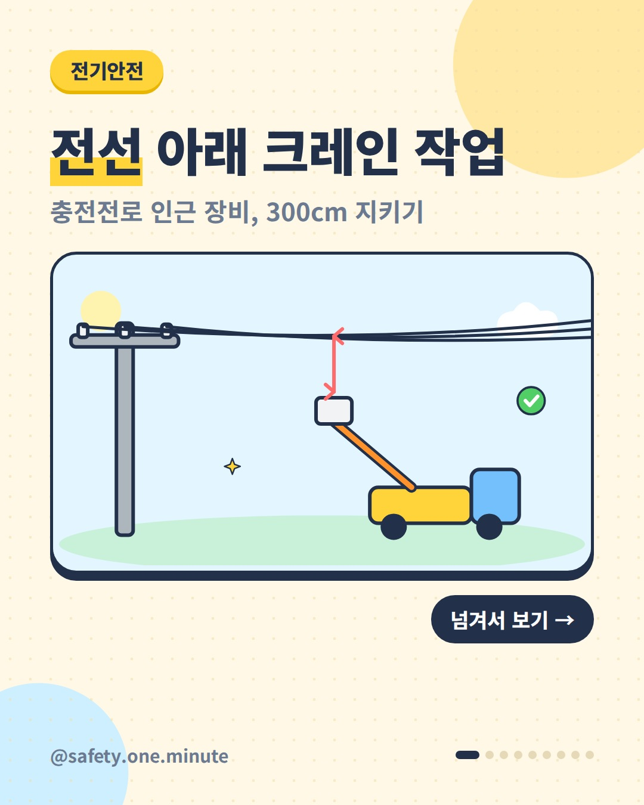
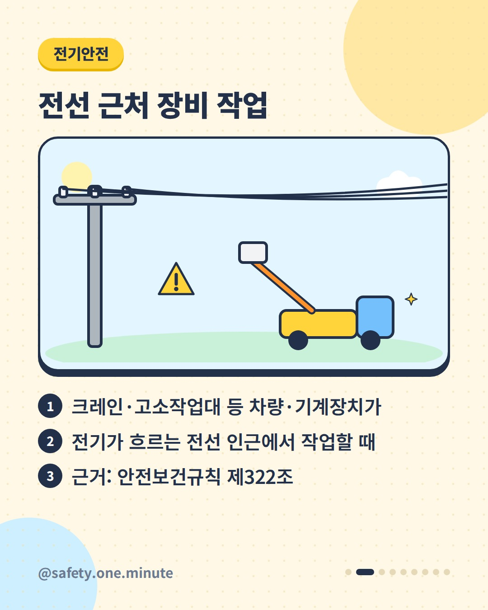
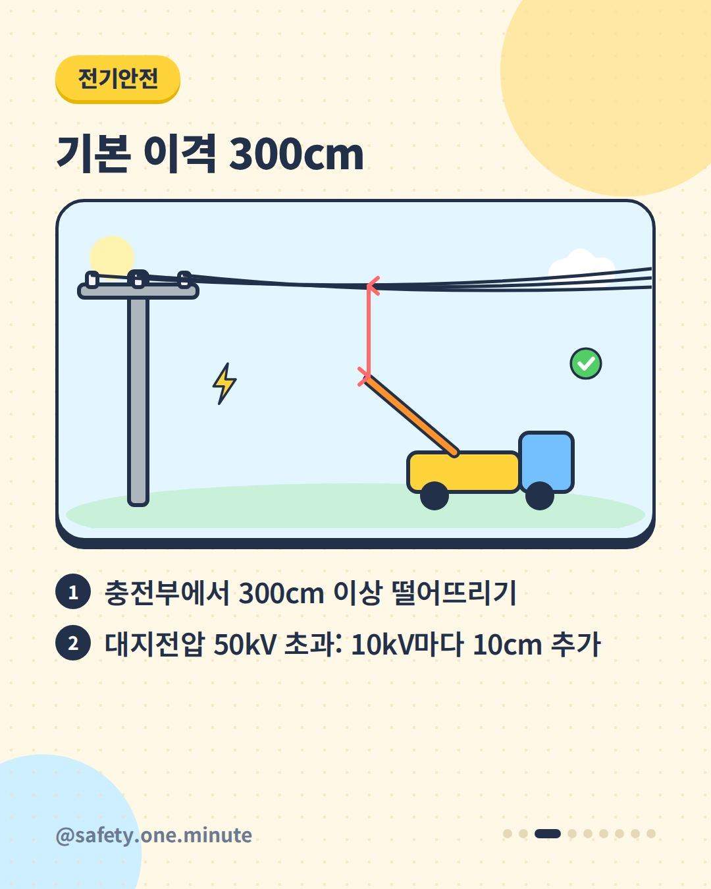
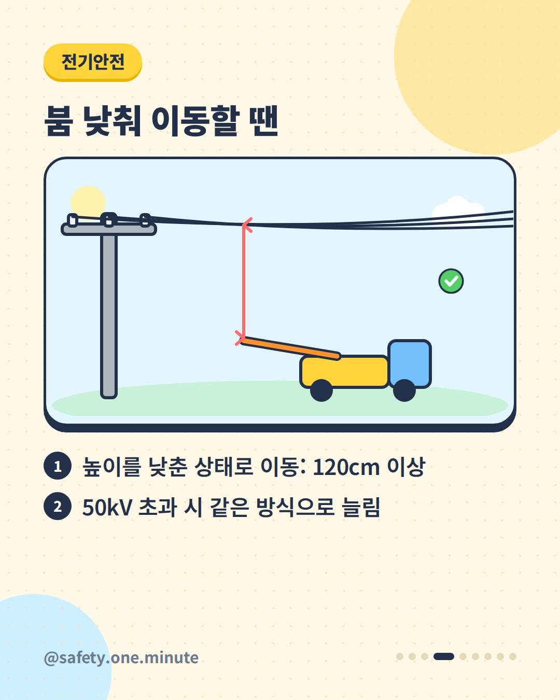
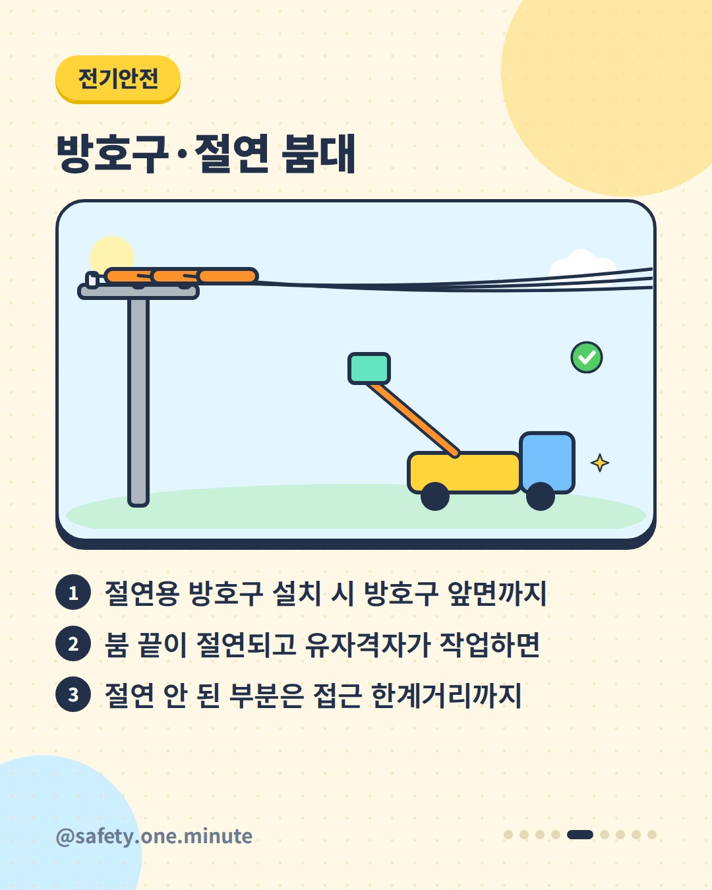
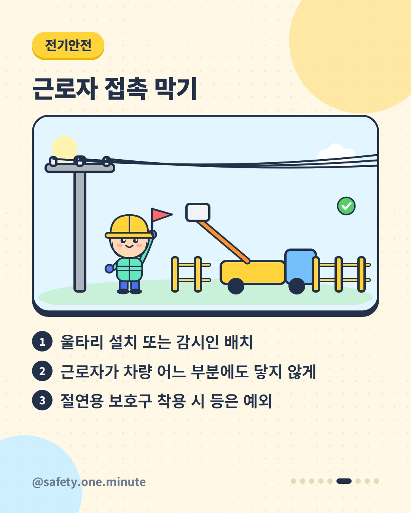
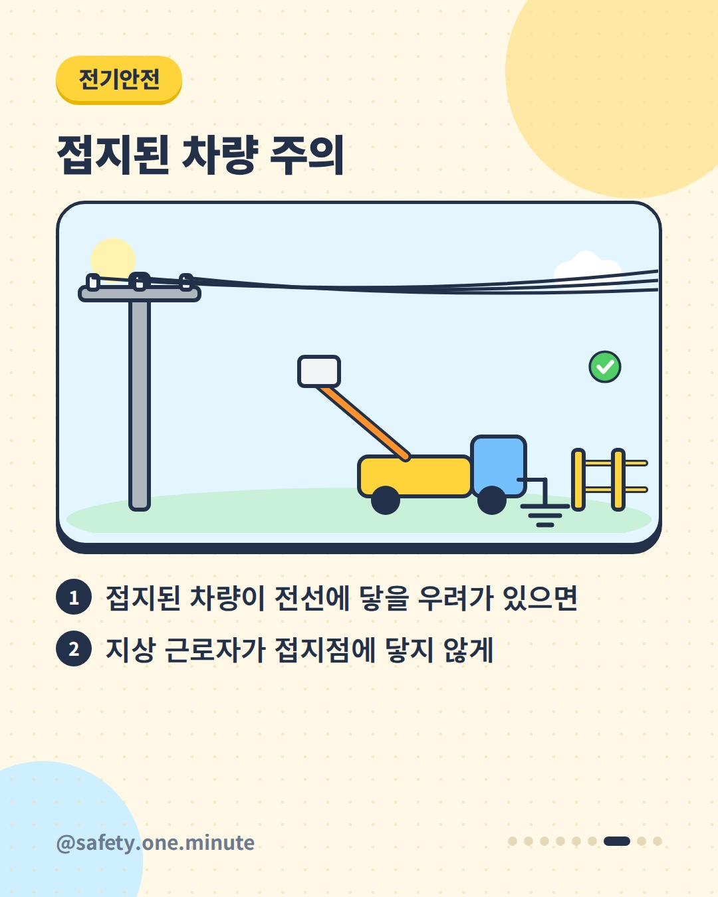
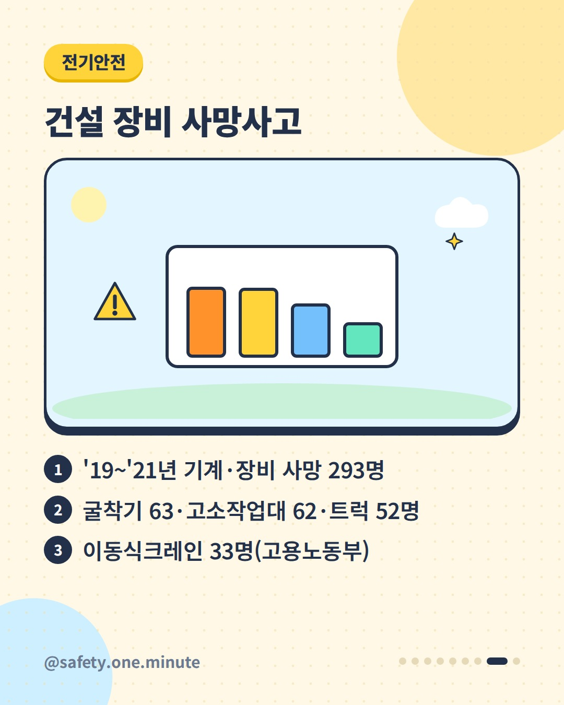
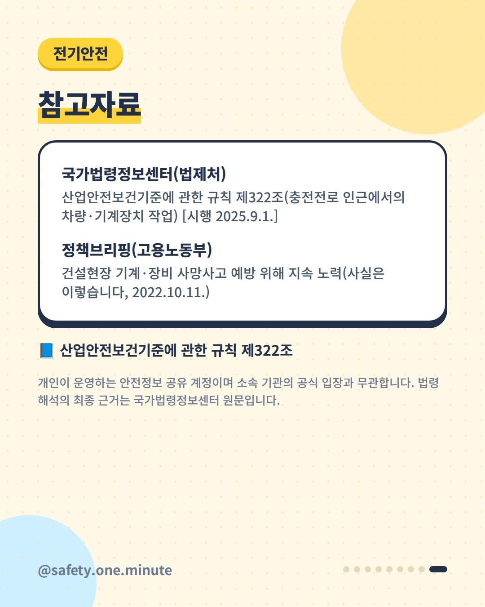

전선 아래 크레인 작업 — 9장 (4:5)









캡션
크레인 붐이 전선 쪽으로 올라갈 때, 얼마나 떨어져야 할까요? 산업안전보건기준에 관한 규칙 제322조는 충전전로(전기가 흐르는 전선) 인근에서 차량·기계장치로 작업할 때의 기준을 정하고 있습니다. ▪ 기본: 충전부에서 300cm 이상. 대지전압 50kV를 넘으면 10kV마다 10cm씩 더합니다. ▪ 높이를 낮춘 상태로 이동할 때는 120cm 이상으로 할 수 있습니다. ▪ 절연용 방호구를 설치하면 방호구 앞면까지, 붐 끝이 절연되고 유자격자가 작업하면 절연 안 된 부분은 접근 한계거리까지로 할 수 있습니다. ▪ 근로자가 차량에 닿지 않도록 울타리나 감시인을 둡니다. 절연용 보호구를 착용·사용하거나, 차량의 절연 안 된 부분이 접근 한계거리 안으로 들어가지 않게 한 경우는 예외입니다. ▪ 접지된 차량이 전선에 닿을 우려가 있으면 지상 근로자가 접지점에 닿지 않게 합니다. 고용노동부에 따르면 2019~2021년 건설현장 기계·장비 사망자는 293명이었고, 굴착기 63명, 고소작업대 62명, 트럭 52명, 이동식크레인 33명 순이었습니다(2022 발표). ※ 세부 요건은 법령 원문(2025.9.1. 시행본 기준)을 확인하세요. 출처: - 국가법령정보센터(법제처) – 산업안전보건기준에 관한 규칙 제322조 - 고용노동부(정책브리핑) – 건설현장 기계·장비 사망사고 예방(2022) 개인이 운영하는 안전정보 공유 계정이며 소속 기관의 공식 입장과 무관합니다. 법령 해석의 최종 근거는 국가법령정보센터 원문입니다. #크레인 #고소작업대 #감전예방 #충전전로 #건설안전 #전기안전